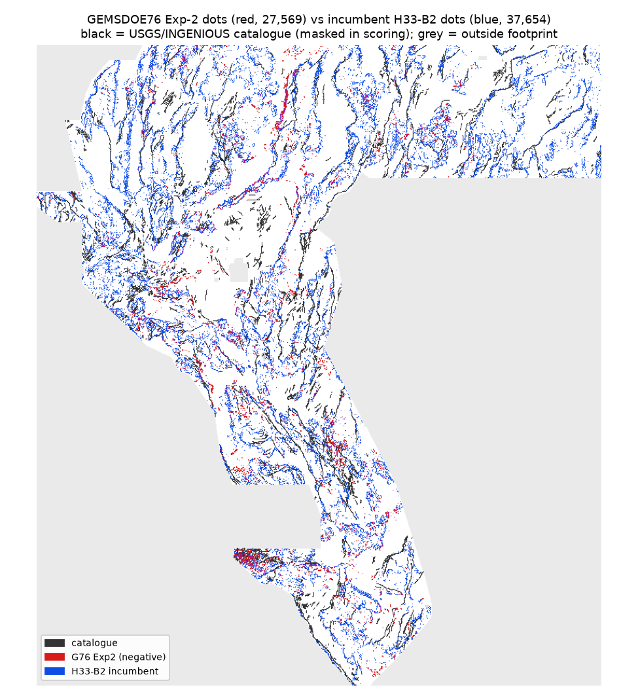
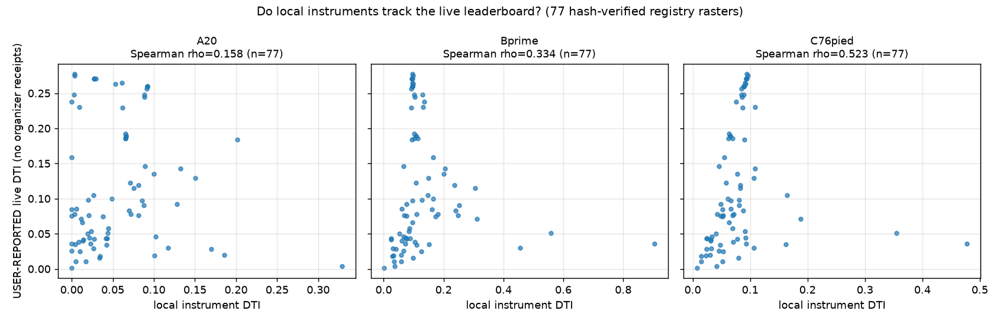

DOE GEMS Prize (DrivenData #306) · pre-registered single-lane session · 2026-10-21 · public-leaderboard leader 0.4413 verified on the official leaderboard (2026-10-21, participant xiaofanhu)
It is NOT OK to download-and-submit this session's TIFF. Lane G76 was tested in two pre-registered experiments on the shared hide-and-recover holdout and lost decisively — below even count-matched random dots. Spending a weekly submission slot on it would predictably score near the bottom of the family. The file below is published only as auditable evidence (its filename says DO-NOT-SUBMIT). Promotion to a real slot is a separate human selector step; this session used 0 slots.
HOLDOUT-DTI (gems57-pooled-hide-v2, seed 20, n=11,321 withheld catalogue px): candidate 0.0218 95% CI [0.0145, 0.0303] vs fair-H33 control 0.0927 vs random 0.0458. No number on this page is an organizer-confirmed score; live values are labelled USER-REPORTED.
Executive summary — how submission works & what to do instead Run card (JSON)
DO NOT SUBMIT
gems76-piedmont-dipole-exp2-27569dots-DO-NOT-SUBMIT.tif
SHA-256 322ca8753a56e71796db6ceb9c7a03f76f890aff1d09f9180304d84e64152178 · 90,648 bytes · single-band float32 ·
EPSG:32611 · 3730×3292 · all 12,279,160 cells finite in [0,1] (0 NaN) · 27,569 dots ·
0 dots on the mapped catalogue. Format-valid by construction (shared fail-closed writer) —
format validity is not score evidence.
Per this repository's fail-closed site policy (main PR #2), no raster is served from the
website. The artifact is preserved in the repository at
evidence/lane-g76/gems76-piedmont-dipole-exp2-27569dots-DO-NOT-SUBMIT.tif
(GitHub)
with its one-TIFF ZIP and writer receipt beside it — review only, do not submit.
Suggested portal note if a future file from this lane were ever promoted (it is not):
G76 piedmont-dipole logistic Exp2: HOLDOUT-DTI 0.0218 vs fair-H33 0.0927 (negative, below random). DO NOT SUBMIT.
Measured: the incumbent h33-h33-2-b2…-zeros is a strict subset of the earlier
44,090-dot "D2.8" raster — the supervised H19-5 surface thinned to isolated dots, with the 6,436 dots
within 200 m of the catalogue deleted (37,654 dots left). The -zeros vs -nan
twins are bit-identical inside the footprint (verified); "zeros" (0.0 outside instead of NaN) only
guarantees passing the portal's whole-raster [0,1] check — it adds no score. Three metric facts do the
work: β/α = 4 makes recall cheap (marginal bar k > 0.056 at s=0.2778); the
300 m max-kernel makes isolated dots nearly as good as lines at ~⅓ the FP cost; and catalogue pixels
are masked in scoring, so near-catalogue dots are pure FP against expert "new fault" truth — deleting
them was free.
Why G76 failed: the 1 m-LiDAR dipole bands, max-pooled to 100 m, are saturated by every fan channel and gully (best single-field AUC 0.631; fitted holdout AUC 0.620). Concentrated but imprecise dots lose to a uniform spread under this max-cover metric. Per-pixel 100 m fields cap at AUC ≈ 0.63 across every stack we measured (LiDAR, DEM10, GeoDAWN) — the winning ingredient is learned multi-physics + spatial context, which is the incumbent family's recipe, not a new transform. Full analysis: docs/research/why-02778.md.

| Arm | HOLDOUT-DTI (A, seed20, n=11,321) | 95% CI | PROXY-DTI B′ | PROXY-DTI C76-pied |
|---|---|---|---|---|
| Exp1 dipole-product dots (26,414) | 0.0217 | [0.0137, 0.0303] | 0.0106 | 0.0140 |
| Exp2 logistic-combiner dots (27,799 holdout / 27,569 final) | 0.0218 | [0.0145, 0.0303] | 0.0172 | 0.0208 |
| fair-H33 control (fold-honest B=2) | 0.0927 | [0.0802, 0.1058] | 0.0961* | 0.0945* |
| random dots (37,654) | 0.0458 | [0.0401, 0.0512] | 0.0708 | 0.0426 |
*H33-as-is on proxies. Leakage canaries: max feature-alone AUC Exp1 0.592, Exp2 0.620 (alarm >0.90 — none fired). Lattice inversion prior: implied hidden-truth size ≈ 12,348 px (mean kernel cover 0.3718, bijection approximation — prior only, not a score). Preregistration: lane + Exp-2 amendment (both written before their scores).
77 registry rasters with USER-REPORTED live scores were fetched, hash-verified against the GEMSDOE70 registry index, and re-scored identically. Correlations with live: Instrument-A-as-is Spearman ρ=0.158 (p=1.7e-01) — construction-biased, see IR-76-08; SGMC B′ ρ=0.334; piedmont-conditioned C76 ρ=0.523 (p=1.0e-06; LOO range [0.504, 0.561]). C76 is the least-bad selector instrument but still leaves the whole top family statistically undifferentiated, and B′/C76 are gameable by SGMC-derived files (IR-76-09). Full table: score-ledger.csv.

| Top-15 by USER-REPORTED live | live* | dots | A20 | B′ | C76 |
|---|---|---|---|---|---|
gemsdoe32-h33-h33-2-b2-20261004T220000Z-e5eb6e7e-zeros.tif | 0.2778 | 37,654 | 0.0037 | 0.0961 | 0.0945 |
gemsdoe36-anderson-geothermal-pinn-38854-20261004T230000Z-9b9ea4e6-nan.t | 0.2750 | 38,854 | 0.0038 | 0.0975 | 0.0960 |
gems28-h36-1-rung30-blind-r1-20261003-b531dae0a36f-allfinite.tif | 0.2710 | 37,660 | 0.0271 | 0.0946 | 0.0936 |
gemsdoe31-h27-4-solo-d28-20261004-8acb75e1-allfinite.tif | 0.2708 | 40,199 | 0.0291 | 0.0966 | 0.0928 |
gems28-h38-1-hf-euler-r30-r1-20261003-56a9f473edc7-allfinite.tif | 0.2707 | 37,860 | 0.0270 | 0.0949 | 0.0938 |
gems28-h32-1-prethin-tip-euler-d2-8-20261003-31e35eee884e-allfinite.tif | 0.2649 | 42,294 | 0.0613 | 0.0963 | 0.0909 |
GEMSDOE33-h33d-analog-tip-stepover-r30-20261004-cb490425926e-nanoutside. | 0.2632 | 41,865 | 0.0531 | 0.0971 | 0.0922 |
gems24-h25-1-dotted-h19-5-d2-8-20261002-e56ea318af89-allfinite.tif | 0.2600 | 44,090 | 0.0919 | 0.0958 | 0.0891 |
gemsdoe30-d28-poisson300m-offcat-44090-20261003T233156Z-91eae1ca-nanouts | 0.2600 | 44,090 | 0.0919 | 0.0958 | 0.0891 |
gems29-refd28-repro-20261003-1cc7dc534d51-nan.tif | 0.2600 | 44,090 | 0.0919 | 0.0958 | 0.0891 |
gems29-wormrank-d28-20261003-59dcaf6dd11d-nan.tif | 0.2560 | 41,338 | 0.0914 | 0.0929 | 0.0854 |
gems70-p5-dual-submod300-oof38k-20261020.tif | 0.2478 | 37,654 | 0.0026 | 0.1289 | 0.0889 |
gems24-h25-1-dotted-h19-5-d1-5-20261002-989f59505db1-allfinite.tif | 0.2477 | 60,069 | 0.0888 | 0.1018 | 0.0846 |
gems27-topo-gap-closure-t-v2-on-d1-5-20261002-5512495c6bd1-allfinite.tif | 0.2449 | 61,328 | 0.0884 | 0.1031 | 0.0862 |
gems49-gate_ortho_w0.25-40k-20261006T213721Z-nan.tif | 0.2376 | 40,000 | 0.0000 | 0.1346 | 0.0757 |
| File | live* | dots | A20 | B′ | C76 |
|---|---|---|---|---|---|
gems70-p5-multiphysics-submodular-37654-20261020.tif | — | 37,654 | 0.0125 | 0.1153 | 0.1079 |
gems70-e2-alluvialstep-38000-20261020T221218Z-zeros.tif | — | 38,000 | 0.0081 | 0.1023 | 0.1143 |
*USER-REPORTED from the project prompt's per-site list; no organizer receipt exists in any cloned repository (IR-76-03). A20 for registry files is not fold-honest.
Compared against 122 registry rasters (surface + final dots):
worst mutual 3 px dot overlap 0.106
(vs gemsdoe32-h33-h33-2-b2-20261004T220000Z-e5eb6e7e-zeros.tif; gate ≤0.70) and worst |Spearman ρ|
0.203 (gate ≤0.90) — uniquely in its lane,
which is necessary but (here) not sufficient. One-way forward overlap vs the dense 206,895-dot calibration
lattice is ~1.0 for any dot raster; disclosed in evidence/uniqueness_audit.json.
Competition rasters were restored from the owner's public GitHub mirrors and verified
byte-for-byte against SHA-256 pins (all 13 files match):
training_features.tif 4371c82e…, labels/existing_faults 7ba308cc…,
sample_submission 2176d08e…. Mirror integrity is not organizer authentication; the
authoritative source is the DrivenData data page (login required). The prompt's "single remaining blocker"
(data placement) does not exist from an environment with GitHub access: scripts/restore_data.py
reproduces the full stack. External layers: USGS 3DEP-derived LiDAR scarp stack & GeoDAWN products via
the same pins (registry/data_manifest.json).
Includes: the incumbent site's empty download ZIP (216 bytes, no TIFF inside); no organizer receipt for "0.2778"; internally inconsistent holdout fields in the incumbent's audit JSON; the non-independent "Anderson" 0.2750 dot set; a shared-allocator early-stop defect (reported for upstream fix, vendor code untouched here). Full list: docs/irregularities.md.